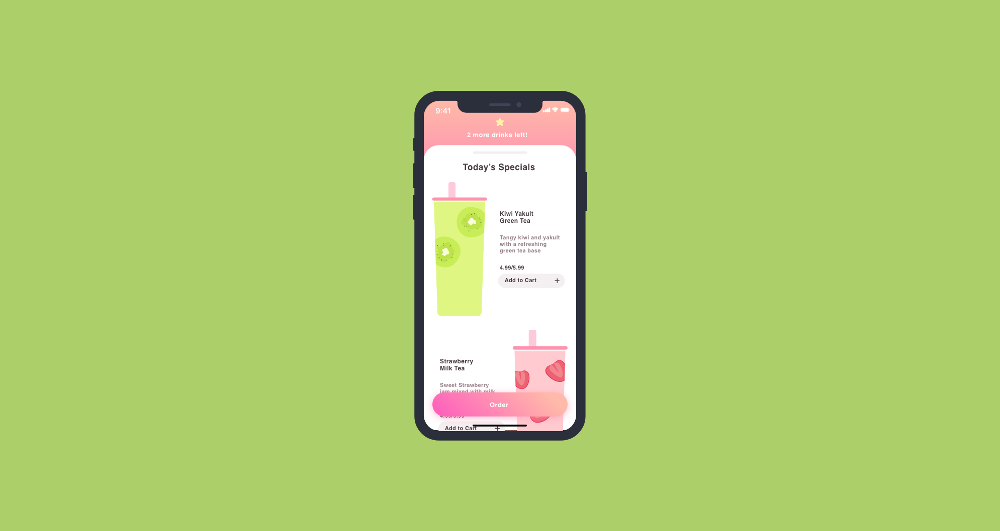
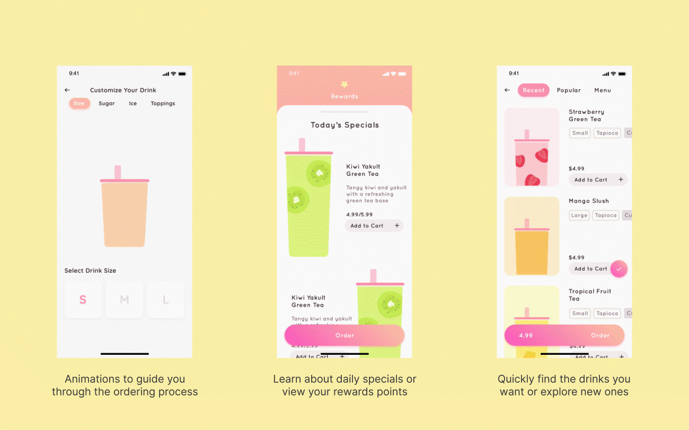
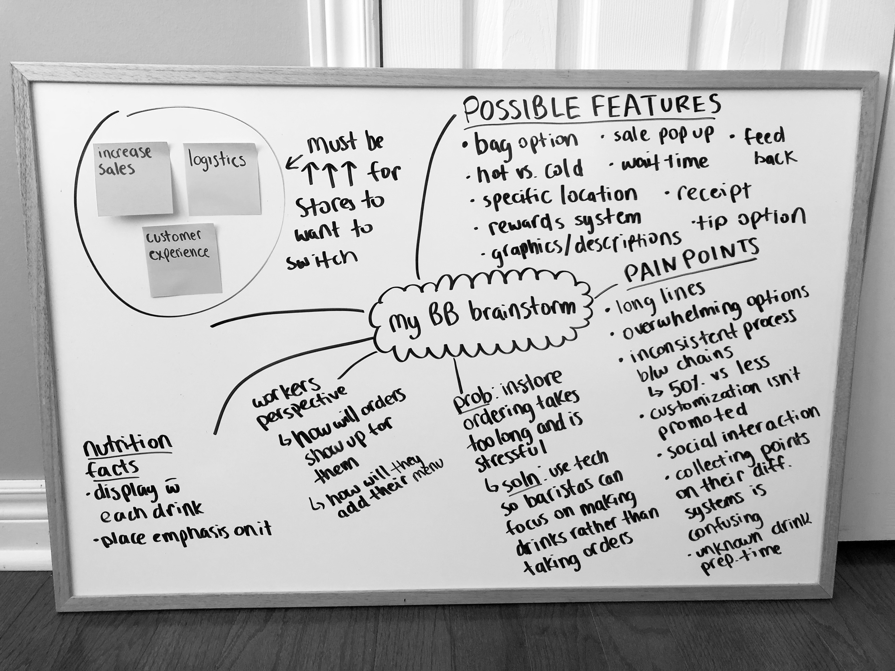
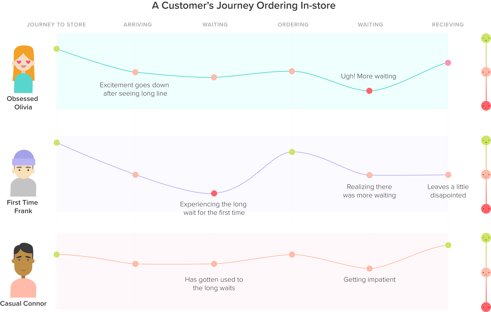

UX Design / Visual Design / Motion Design / Personal Passion Project / Summer 2019
As bubble tea becomes more and more popular, the bubble tea experience gets worse and worse. Lines to order can get up to an hour long and the hundreds of drink options are overwhelming. It takes away the joy of drinking bubble tea but that is where My BB comes in.
My BB = my buBBle tea
My BB is a bubble tea ordering app created to allow users to skip the line and order at their pace. Bubble tea has brought so much happiness to my life and I want to share it with others in my element, design. Compared to other apps like Ritual, My BB brings the physical bubble tea experience into the digital world.
While brainstorming, I thought about different product goals and considerations that would help improve the ecosystem as a whole. Letting my thoughts freely develop helped me connect the dots and think of important features that should be included.
To have a better understanding of the market, I compared current bubble tea apps and analyzed their strengths and weaknesses. Larger food delivery apps, like Skip the Dishes on the bottom left, are easy to use but don't have a sense of community. On the other hand, chains that have their own app, like Chatime on the bottom right, aren't fully developed and based on the App Store reviews, have confusing navigation. During this market search, I realized there was an opportunity for My BB to thrive.
Although I knew my pain points, I wanted to understand the struggles of other bubble tea drinkers as well through user interviews. That way I can design a platform that solves everyone's issues and create an edge over other drink ordering platforms.
“I love going out to get bubble tea with my friends but I hate how long the line ups are and how long I have to wait after I order for them to make our drinks.”
“I like trying new drinks but I usually just stick to my usuals because the menus are always really long and confusing.”
“I try to collect reward points but I usually forget to ask for them or forget to bring my rewards card.”
Using those insights, I was able to pick out three key pain points to keep in mind throughout the whole designing process to ensure that all needs are met.
I also summarized my findings in the customer journey chart below. Across all three customer types, the long wait times significantly stood out as the least pleasant phase of the journey. After realizing that, I decided to target on improving everyone's overall waiting experiences rather than narrowing down and designing for one user.
After conducting and analyzing all my user research, I moved onto creating low fidelity wireframes. I started with pencil and paper using the rough flow that I made during the brainstorming process and then transferred it to Adobe XD. I also tested with different users every iteration to find opportunities for improvement.
To test, I asked them to complete certain tasks, like ordering one drink special, and observed their behaviour. Were they confused or was it straight forward? At what parts did they show signs of hesitation? Testing my prototype is always very important to me as it allows a fresh set of eyes to provide valuable user feedback. It also helps remind me that I'm not just designing for myself, but for other users as well.
Using Adobe After effects, Adobe Illustrator and Adobe XD, I created My BB's high fidelity prototype with all the screens designed with future special drinks and menu updates in mind. My goal was to add more excitement to the ordering experience through playful UI and micro-interactions.
This pain point was the mission of my app and what I designed it around. My BB provides bubble tea customers with the option to skip the line and order on their mobile phones. It allows them to avoid the long waiting process and allows them to control their experience at their own pace. With the motion graphics and micro-interactions I included throughout the UI, it creates a more enjoyable and exciting process.
With my design, drinks are categorized into three sections that provide helpful guidance for users to quickly find what they're looking for and allow them to easily discover and navigate to new drinks.
My BB's rewards system replaces the traditional stamp cards that are easily forgettable and compared to services like Vicinity that provide digital point tracking, My BB incorporates unique UI that motivates and builds stickiness for customers. With this process, points are automatically added with every order and are tracked in one location, your phone.
I am a slight bubble tea connoisseur so I had a lot of fun working on My BB! My BB challenged me to express my creativity, try out UI animations in After Effects, and create customer journeys for the first time. After completing it, I am still a bit curious about a few things too . . .
How might the onboarding process look like for new users?
How would My BB look like on the bubble tea shop’s side? How would orders show up on their screen?
Should I have included a feature that allows users to choose their pick up time for even more flexibility?
Would My BB be more effective as in in-store kiosk rather than an app?